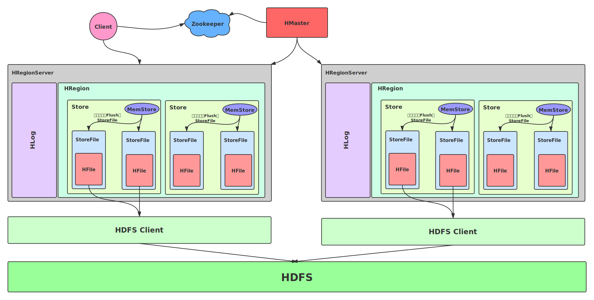
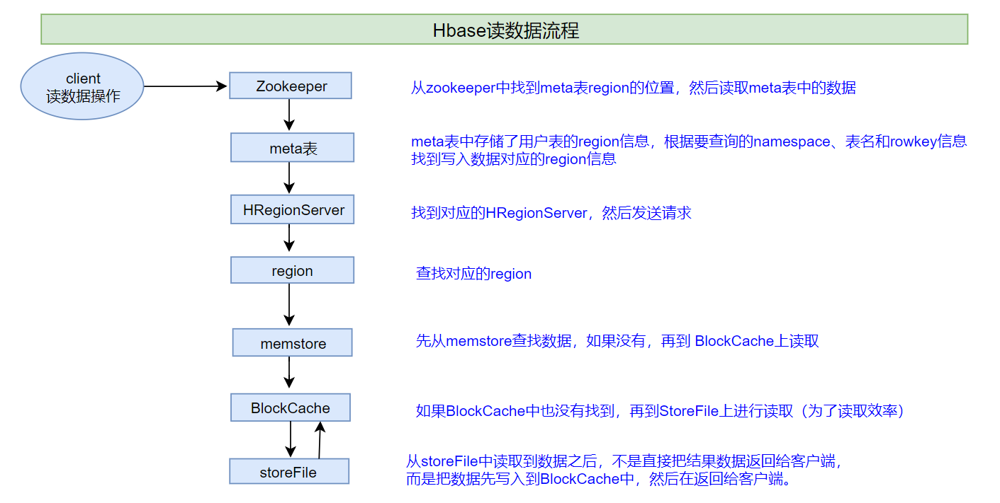

5. Hbase¶
5.1. 介绍¶
起源
21世纪的前三驾马车
GFS
------------------->HDFSMapReduce
------------>MapReduceBigtable
-------------->Hbase
背景：大数据量的数据要求高性能的读写
为什么不采用HDFS？
基于文件的颗粒度，必须对整体文件进行操作，读写磁盘
慢
需要设计一款数据库工具，能进行大数据量的实时随机读写的存储
MySQL：小数据量，不能解决大数据量的问题
Redis：能满足性能要求，不能满足大数据量的内存成本要求，安全性较差
HDFS：能解决大数据量，不能满足实时
怎么解决大数据量？
需要做分布式
怎么解决高性能的读写？
基于内存存储
内存的成本高，易丢失，不可能满足所有数据的存储！
现象：越新的数据，被处理概率越大，越老的数据，被处理的概率相对较小
解决：将新的数据存储在内存中，对于老的数据达到一定条件时将内存中的数据写入磁盘[写入HDFS]
冷热数据分离
老的数据在HDFS
新的数据在内存
数据存储在磁盘，如何保证数据安全？
HDFS：基于硬盘做了备份[数据冗余机制]
操作系统：做磁盘冗余阵列RAID1
Hbase直接基于硬盘存储，硬盘损坏会导致数据丢失，要考虑数据副本
Hbase底层对于文件的存储直接选用了HDFS来保证数据安全性
内存的数据丢失如何解决？
操作日志WAL也就是HLog
Write Ahead Log：预写日志
预写日志记录内存中所有数据的操作
总结：实现分布式高性能读写
基于分布式内存优先对数据读写
所有老的数据持久化在HDFS
如果数据在HDFS，从HDFS读，如何解决性能问题？
如何能在一个文件中快速找到一条数据？
构建有序
5.2. 功能¶
是一个基于分布式内存和HDFS实现存储的随机、实时读写的NoSQL数据库
实现数据的存储
提供数据的读写
5.3. 应用场景¶
电商：订单存储（超过半年的历史订单需要另外勾选查询）
历史订单的存储管理以及查询
游戏：操作日志
对大量操作日志进行实时的统计分析处理
金融：消费记录
管理查询所有消费记录
电信：账单通话记录
交通：监控车辆信息
5.4. 特点及概念¶
5.4.1. 特点¶
分布式：多台机器来搭建集群实现分布式存储
内存：基于分布式内存，数据优先写入了机器的内存
内存中的数据达到一定条件，会将内存的数据写入HDFS成为文件
NoSQL：每个NoSQL都有自己的特点
Hbase基于列存储，KV结构的数据库
5.4.2. 概念¶
| 概念 | MySQL | HBase | | —— | ————————————– | ———————————————————— | | 数据库 | database | namespace | | 表 | table | namespace:table | | 行 | 主键：primary key | 行键：rowkey | | 列族 | 无 | column family：对列的分组 | | 列 | column：每一行有多列，每一行列是一致的 | column：每一行可以有多列，每一行的列可以不一样，任何一列必须属于某一个列簇，cf:colName | | 多版本 | 无 | VERSIONS，一列的值可以存储多个版本 | | 时间戳 | 默认无，可以有 | 默认有 |
Namespace：命名空间，就是MySQL中数据库的概念，用于区分数据存储
Hbase默认会自带两个namespace：default，Hbase
Table：表，区分更细的数据的划分
任何一张表必须属于某一个namespace
除了default namespace下的表为，其他任何的namespace下的表在使用时都需要加namespace来访问，即
namespace:tableName，namespace实际是表名的一部分
Rowkey：行键，类似于MySQL中的主键
功能：
唯一标识一行的数据
构建索引【整个HBASE只有这一个索引，不能有其他索引】
rowkey是HBASE的唯一索引
HBASE底层默认按照ASCII码【字典顺序】对Rowkey进行排序，以提高查询效率
牺牲一定写的代价换取基于有序的高性能的查询
决定了分区的规则
是HBASE中表非常特殊的一列，每张HBASE表都自带这一列，这一列不属于任何列簇
难点：Rowkey的值由开发者自行设定
Rowkey的值的设计决定了查询效率
问题：只有按照RowKey查询才走索引查询，其他所有查询都直接走全表扫描(如何设计Rowkey让查询效率更高?)
解决：
将查询条件组合作为RowKey => Rowkey的设计(rowkey默认是前缀匹配，如果前缀匹配不上，方法不奏效)
二级索引：基于一级索引之上构建一层索引
利用ES构建二级索引
举例：
例如按照标题实现对新闻数据的实时检索
将除了正文部分的数据列存储在ES中
将所有的新闻数据列存储在Hbase中
HBASE中以新闻id作为rowkey，ES中以新闻id作为docId
根据标题去查询ES得到docId即对应于HBASE中的rowkey，以rowkey去查询HBASE
Column Family：列簇，对列进行分组
分组是为了提高性能，减少查询数据时的比较
如何分组？
组名自定义，可以任意，一般有标识度即可
将拥有相似IO属性的列放在一组
两组
CF1：经常被读写的列放在一组
CF2：不经常被读写的列
Column：列，类似于MySQL中的列
HBASE中每个Rowkey，可以拥有不用的列
除了Rowkey，任何一列都必须属于某一个列族
引用列
cf:colName
VERSIONS：多版本，HBASE中允许一列存储多个版本的值
列簇级别
如果配置某个列族的版本个数为2，那么此列族下所有的单元都具有2个版本
HBASE允许存储历史版本的值，行和列相交是单元格组
默认HBASE查询时，默认会返回最新的值(默认版本数为1)
如何区分一列的多个版本的值？
默认通过时间戳来进行区分不同版本的值
每个RowKey的每一列自带时间戳，用于区分多版本
TimeStamp：HBASE中每一个Rowkey的每一列默认自带这个值，会随着数据的更新时间而变化
用于区分多版本
5.4.3. 列存储¶
与其他数据库进行对比
MySQL：按行存储，写入读取都是行级操作
insert：必须指定一行每一列的值，每一行都有固定的列，如果不指定列，值为null
select：先对符合条件的行读取，再对列进行过滤
Redis：按照K V结构行存储
Hbase：按列存储
最小颗粒度：列
可以为每一行构建不同的列
插入：put
put每次只能为某一行插入一列
设计思想？为什么这么设计成列存储呢？
优点：直接基于列进行读写，提高查询的性能
按行存储
先读取所有符合条件的行，再进行对列的过滤
按列存储
直接读取需要的列
5.5. HBASE架构¶

分布式主从架构
HMaster：主节点，负责管理类操作
HRegionServer：从节点，有多台，用于构建分布式内存
HBASE是一个数据库，将一条数据写入HBASE，如何实现分布式存储？
分的规则：将一张表划分成多个region，不同的region分布在不同的RegionServer中
HBASE中分区的规则
写入一条数据根据分区规则，决定写入哪个分区，写入到对应分区所在的regionServer上
类似：将一个文件拆分成多个块，将不同的块存储在不同的DN上
HDFS：是按HBASE底层基于数据磁盘持久化的存储
达到一定的条件，HRegionServer内存总存储的数据会Flush到HDFS上存储为文件
Zookeeper
辅助选举，实现高可用HA，避免Master单点故障
用于存储关键性数据
5.6. 配置¶
配置zookeeper时为什么要写三个机器的地址及端口
这与zookeeper是否是分布式的无关
避免由于在连接其中一台机器时，而恰好该机器宕机了，则自动会尝试连接其他机器
当初配置hadoop上更改了哪些文件
三个env文件
四个site文件
一个slaves
内容是集群中三台机器的地址
本地优先计算
slaves文件里面记录的是集群里所有DataNode的主机名，到底它是怎么作用的呢？slaves文件只作用在NameNode上面，比如我在slaves里面配置了 host1 host2 host3 三台机器，这时候如果突然间新增了一台机器，比如是host4，会发现在NN上host4也自动加入到集群里面了，HDFS的磁盘容量上来了，这下子不是出问题了？假如host4不是集群的机器，是别人的机器，然后配置的时候指向了NN，这时候NN没有做判断岂不是把数据也有可能写到host4上面？这对数据安全性影响很大。所以可以在hdfs-site.xml里面加限制。
dfs.hosts /home/hadoop-2.0.0-cdh4.5.0/etc/hadoop/slaves 这相当于是一份对于DN的白名单，只有在白名单里面的主机才能被NN识别。配置了这个之后，就能排除其他DN了。slaves中的内容可以是主机名也可以是IP地址。
hbase.rootdir：用于指定HBASE的数据文件存储在hdfs的什么位置
必须是完整的hdfs路径，包含头部
如果HDFS做了HA
namenode
hdfs://mycluster
HBASE如何知道谁是Active谁是Namenode？
将hdfs-site.xml和core-site.xml放入HBASE的conf目录下
启动与关闭
先启动HDFS和Zookeeper
HDFS：等待HDFS退出安全模式再启动Hbase
start-dfs.sh
Zookeeper
/export/servers/zookeeper-3.4.6/bin/start-zk-all.sh
启动Hbase
start-hbase.sh
关闭hbase
stop-hbase.sh
5.7. 客户端操作¶
HBASE Shell
直接使用hbase shell启动
hbase shell
5.7.1. DDL操作¶
查看命令方法：
Help 'command'namespace
列举：
list_namespace创建：
create_namespacecreate_namespace 'ns1'，{'PROPERTY_NAME'=>'PROPERTY_VALUE'}
删除：
drop_namespace
table
列举：
list只能列举用户表，系统表不能被列出
创建：
createns：表示namespace
t1：表示表的名称
f1：表示列簇的名称
语法：创建表的时候至少给定表名和一个列簇
create 't1','f1','f2','f3' create 't1',{NAME=>'f1',VERSIONS=>1,TTL=》2592000,BLOCKCACHE=true}
删除：drop
直接删除表会报错：
Table xxx is enabled.Disable it first.所有的表的结构删除或者修改之前，要先确认这张表没有对外提供服务，是一个禁用状态
如果删除，要先禁用
disable如果修改，要先禁用，后修改，再启用
enable
查看：desc
desc 'student:stu_info'
5.7.2. DML操作¶
put：用于插入/更新数据
put 'ns1:t1','r1','f1:c1','value',[ts1]
参数含义
ns1：表示namespace
t1：表示表名
r1：表示rowkey
f1：列簇的名称
c1：表示列的名称
value：这一列的值
ts1：时间戳
get：用于读取数据(一条rowkey数据)，必须指定rowkey
是HBASE中最快的读取数据的方式（使用rowkey索引）
scan：用于扫描数据
用法一：全表扫描
scan 'student:stu_info'
用法二：scan+过滤器
工作中最常用的方式，可以根据查询条件返回所有符合条件的数据
范围过滤[左闭右开）
RowKey是前缀匹配的
STARTROW：从哪一条rowkey开始
STOPROW：结束于哪一条rowkey
scan 'student:stu_info',{STARTROW=>'20200920_001'}
delete：用于删除数据
如果不加版本默认删除最新版本
deleteall：删除所有版本
5.8. 存储设计¶
5.8.1. 存储概念¶
分布式存储
分布式内存：RegionServer
分布式磁盘：HDFS
如何实现的：将HBASE中的表构建成分布式的表
HBASE中的每张表可以对应多个分区[Region]
默认创建只有一个分区（Region）
与HDFS的区别
| 概念 | HDFS | HBase | | ——– | —————- | ———— | | 分类 | 目录 | NameSpace | | 存储类型 | 文件 | 表 | | 分的机制 | 分块：Block | 分区：Region | | 存储节点 | DataNode | RegionServer | | 规则 | 大表：128M一个块 | RowKey范围 |
Region：HBASE中表的分区，一张HBASE表可以有多个region，每个region存储在不同的RegionServer中
是HBASE做负载均衡的最小单元
类似于HDFS中的文件的块
一个Region只会归某一个RegionServer所管理
一个RegionServer可以管理多个region
如何决定数据会写入一张表的哪一个Region中?分区规则是什么？
分区规则：
整个HBASE中的所有数据都是按照字典顺序【ASCII码的前缀逐位比较】进行排序的，所有数据存储时每个分区都有一个范围
startKey
endKey
规则：按照rowkey所属的范围来决定写入哪个分区
Situation1：默认创建的表只有1个分区Region
region0：负无穷~正无穷
Situation2：创建表的时候指定分区的划分
region0：-oo~100
region1：100~200
region2：200~300
……
region9：900~+oo
Store：列族，按照列族划分不同的Store，这个表有几个列族，region中就有几个Store【一个Store代表一个列族】
设计目的：将不同的列区分存储，就是列族的划分
一个Region里有多个Store
MemStore：内存区域
每个Store都有一个
数据先写入MemStore
StoreFile：HFILE，物理存储在HDFS上的文件
每个Store中有0或者多个StoreFile文件
达到一定条件之后，Memstore中的数据会被Flush刷写到HDFS变成StoreFile文件
5.8.2. 存储模型¶
假设执行
put 'ns1:t1','r1','f1:c1','value',[ts1]步骤
:one:根据表名请求元数据找到对应的所有Region信息
:two:根据RowKey决定存储到哪个region中
:three:将写入请求提交给这个region所在的regionserver中
:four:根据列族进行判断，决定写入哪个Store中(也会写入memstore，当达到一定条件时，memstore中的数据会被刷写到HDFS变成storefile文件)
5.8.3. 存储流程¶
5.8.3.1. 写入¶

默认情况下，执行写入时会写到两个地方：预写式日志（write-ahead log,也称HLog）和MemStore。Hbase默认方式是把写入动作记录在这两个地方，以保证数据持久化。只有当这两个地方的变化信息都写入并确认后，才认为写动作完成。
MemStore是内存里的写入缓冲区，HBase中数据在永久写入磁盘之前在这里累积。
当Memstore填满后，其中的数据会刷写到硬盘，生成一个HFile，HFile里的内容是按照Rowkey字典排序的，也就是说数据是经过MemStore排序过后才写入HFile的。
HFile是HBase使用的底层存储格式。HFile对应于列族，一个列族可以有多个HFile，但一个HFile不能存储多个列族的数据。在集群的每个节点上，每个列族有一个Memstore。
大型分布式系统中硬件故障很常见，HBase也不例外。如果MemStore还没有刷写，服务器就崩溃了，内存中没有写入硬盘的数据就会丢失。应对办法是在写动作完成之前先写入WAL。HBase集群中每台服务器都维护一个WAL来记录发生的变化。WAL是底层文件系统上的一个文件。直到WAL新记录成功写入后，写动作才被认为成功完成。
如果Hbase服务器宕机，没有从MemStore中刷写到HFile的数据可以通过回放WAL来恢复。不需要手动执行。
Step1：根据表名找到这张表对应的所有Region信息
问：怎么能得到表所对应的所有的Region信息？
通过元数据来获取
HBase自带两张表
hbase：meta：记录hbase中所有用户表的元数据信息
两种RowKey
以表明作为rowkey
以region名作为rowkey
hbase：namespace：记录了当前hbase中所有namespace的信息
通过put语句中的表名对meta表进行前缀匹配，就能得到这张表所有的region信息2
问：如何能知道Meta表所对应的region位置？
meta表所对应的region信息都记录在zookeeper中
HBASE中所有的客户端都要先连接zookeeper
Step2：根据Rowkey以及表的region起始范围进行比较，得到要写入的region
Step3：将写入请求提交给这个region所在的regionServer
问：如何能知道这个region所在的regionserver是哪个？
通过元数据来获取这个region所对应的regionserver的地址
Step4：regionserver将输入写入对应的region，根据列族判断写入哪个Store
Step5：先写WAL(HLog)，然后将数据写入MemStore
问题：为什么要先写HLog，而后再写MemStore呢？
答：**为了防止数据丢失。**如果先写MemStore，写完成之后服务器就挂了，还没有写HLog，而MemStore是内存区域，挂了内存中的数据就丢失了，那么写入的数据也就丢失了。如果先写WAL(HLog)，也就记录了操作日志，当写完HLog和MemStore之后，即是内存数据丢失，也可以根据HLog中的操作日志，在其他HRegionServer中回放这些操作，保证数据的不丢失。
Step6：写入流程结束，返回客户端
Flush：当Memstore中的数据达到一定条件，会触发将内存中的数据刷写如HDFS变成Sorefile文件
Compact：将多个storefile文件进行合并成大文件
Hbase没有删除和更新，删除和更新都是插入一条数据
老的数据被标记为更新状态或者是删除状态
这个阶段会真正从物理上删除被标记的数据
Split：如果一个region存储的数据到达一定阈值，一个region会被等分为两个region
分摊单个region存储数据过多，负载过高
分由regionserver来分，两个region的去向由Master来分配
5.8.3.2. 读取¶

如果想快速访问数据，通用的原则是数据保持有序且尽可能保存在内存里。HBase实现了这两个目标。HBase读动作必须重新衔接持久化到硬盘上的HFile和内存中MemStore里的数据。HBase在读操作上使用了LRU（最近最少使用算法）缓存技术。这种缓存也叫作BlockCache，和MemStore在一个JVM堆里。BlockCache设计用来保存从HFile里读入内存的频繁访问的数据，避免硬盘读。每个列族都有自己的BlockCache。
掌握BlockCache是优化HBase性能的一个重要部分。BlockCache中的Block是HBase从硬盘完成一次读取的数据单位。HFile物理存放形式是一个Block的序列外加这些Block的索引。这意味着，从HBase中读取一个Block需要先查找一次该Block然后从硬盘读取。Block是建立索引的最小数据单位，也是从硬盘读取的最小数据单位。Block大小默认为64KB，如果主要用于随机查询，细粒度的Block更好。Block变小会导致索引变大，消耗更多内存。如果主要用于顺序扫描，一次读取多个Block，那个大一点的Block较好。
从HBase中读出一行，首先检查MemStore，然后检查BlockCache，最后访问HFile。
step1：根据表名从元数据获取对应的region信息
step2：
有rowkey
无rowkey
step3：根据列族来读取对应Store的数据
step4：读
先读memstore
如果读memstore【写缓存】没有，就去读BlockCache【读缓存】
最后读StoreFile
第一次读取：如果memsotre没有就迫不得已地去读StoreFile
以后再去读，就会将读到的数据先写入BlockCache(默认开启)，避免二次读浪费时间
缓存释放策略：LRU算法(最近最少被使用)
5.9. 角色功能¶
5.9.1. HMaster¶
主要负责集群管理
节点管理：regionserver的状态管理
故障转移
元数据管理：用于接收所有DDL操作请求
管理meta表以及namespace表的数据
与zookeeper连接，将一些管理类的元数据存储在zookeeper中
region管理：负责管理每个region的分配
故障恢复
split阶段的分配
5.9.2. HRegionServer¶
接收客户端所有region的读写请求
管理region存储数据：分割
维护：
WAL
MemCache
BlockCache
将内存的数据Flush成为StoreFile文件
5.9.3. Zookeeper¶
构建HA：辅助选举
存储关键性的管理类元数据
5.9.4. HDFS¶
持久化的实现
5.10. HBASE Java API¶
注意：所有的HBASE客户端所连接的服务端都是Zookeeper
Conf.set("hbase.zookeeper.quorum")，"node1:2181,node2:2181,node3:2181"Get操作时一个Result对象就代表一个RowKey数据对象
5.10.1. 查询¶
Hbase的根据起止RowKey查询默认是左闭右开的，如果想要得到左闭右闭的结果，可以在查询止rowkey后加上不是rowkey字段的其他值，比如起止rowkey范围是从00到59，而如果直接设置
(00,59)查询，则查询不到59这条数据，而如果按照(00,59~)来查询，则会查询出包含59的数据.
5.11. Hbase与MapReduce的集成¶
5.11.1. 应用场景¶
HBASE：分布式存储
MapReduce、Spark：分布式计算
大数据的本质：一系列大数据的处理软件工具对大量数据进行分析处理
存储：HBASE
计算：MapReduce
5.11.2. 集成原理¶
MapReduce五大阶段
Input
TableInputFormat
Map
Shuffle
Reduce
Outptut
TableOutputFormat
5.11.4. 写HBASE数据¶
问题：如果将代码打包成jar上传至Linux运行会报错
ClassNotFoundError:org/apache/hadoop/hbase/HBaseConfiguration解决：
将HBASE的jar包放入hadoop的环境变量
[root@node1 datas]# hbase mapredcp
[root@node1 datas]# hbase mapredcp /export/servers/hbase-2.1.0/lib/shaded-clients/hbase-shaded-mapreduce-2.1.0.jar:/export/servers/hbase-2.1.0/lib/client-facing-thirdparty/audience-annotations-0.5.0.jar:/export/servers/hbase-2.1.0/lib/client-facing-thirdparty/commons-logging-1.2.jar:/export/servers/hbase-2.1.0/lib/client-facing-thirdparty/findbugs-annotations-1.3.9-1.jar:/export/servers/hbase-2.1.0/lib/client-facing-thirdparty/htrace-core4-4.2.0-incubating.jar:/export/servers/hbase-2.1.0/lib/client-facing-thirdparty/log4j-1.2.17.jar:/export/servers/hbase-2.1.0/lib/client-facing-thirdparty/slf4j-api-1.7.25.jar
声明环境变量
[root@node1 datas]# export HADOOP_CLASSPATH=$HADOOP_CLASSPATH:/export/servers/hbase-2.1.0/lib/shaded-clients/hbase-shaded-mapreduce-2.1.0.jar:/export/servers/hbase-2.1.0/lib/client-facing-thirdparty/audience-annotations-0.5.0.jar:/export/servers/hbase-2.1.0/lib/client-facing-thirdparty/commons-logging-1.2.jar:/export/servers/hbase-2.1.0/lib/client-facing-thirdparty/findbugs-annotations-1.3.9-1.jar:/export/servers/hbase-2.1.0/lib/client-facing-thirdparty/htrace-core4-4.2.0-incubating.jar:/export/servers/hbase-2.1.0/lib/client-facing-thirdparty/log4j-1.2.17.jar:/export/servers/hbase-2.1.0/lib/client-facing-thirdparty/slf4j-api-1.7.25.jar
5.12. BulkLoad¶
5.12.1. HBASE导入数据的两种方式¶
第一种方式：Put
按照完整的放肆写入写入规则写入数据到HBASE，数据先进入内存
问题：如果一次性写入的数据比较大，会导致HBASE的网络、内存、磁盘IO大量地被占用
第二种方式：BulkLoad
Step1：将大量的数据转换为HFILE文件
Step2：将转换好的文件加载到HBASE对应的列族的目录中
优点：避免了数据经过内存
5.12.2. BulkLoad实现¶
实现1：代码实现
在HBASE中创建一张空表
create 'mrhbase','info'
Step1：编辑MapReduce的程序，用于将一个普通文件转换为HFILE文件
yarn jar bulk.jar bigdata.itcast.cn.hbase.bulk.TransHfileMR /user/hbase/input/testfile.txt /user/hbase/output
Step2：将生成的HFILE文件加载到HBASE的表中
yarn jar bulk.jar bigdata.itcast.cn.hbase.bulk.BulkLoadToHbase /user/hbase/output
实现2：HBASE自带程序
HBASE自带一些MapReduce程序
查看帮助
yarn jar /export/servers/hbase-2.1.0/lib/hbase-mapreduce-2.1.0.jar
ImportTSV：将各种类型的文件通过MapReduce使用bulkload或者Put的方式将数据写入Hbase
yarn jar /export/servers/hbase-2.1.0/lib/hbase-mapreduce-2.1.0.jar importtsv
方式一：通过put的方式将数据写入这张表
Usage: importtsv -Dimporttsv.columns=a,b,c <tablename> <inputdir>yarn jar /export/servers/hbase-2.1.0/lib/hbase-mapreduce-2.1.0.jar importtsv -Dimporttsv.columns=HBASE_ROW_KEY,info:name,info:age,info:age mrhbase /user/hbase/input/testfile.txt-Dimporttsv.columns：用于指定文件中的每一列与HBASE表的每一列的对应关系
方式二：通过bulk方式来实现
step1：用于将输入文件转换为HFILE文件
yarn jar /export/servers/hbase-2.1.0/lib/hbase-mapreduce-2.1.0.jar importtsv -Dimporttsv.columns=HBASE_ROW_KEY,info:name,info:age,info:age -Dimporttsv.bulk.output=/user/hbase/output mrhbase /user/hbase/input/testfile.txt
-Dimporttsv.bulk.output：用于指定生成的HFILE所在的位置
step2：通过bulkload加载到表中
yarn jar /export/servers/hbase-2.1.0/lib/hbase-mapreduce-2.1.0.jar completebulkload /user/hbase/output mr hbase -loadTable
默认分隔符为tsv，如果不是tsv，指定：seperator = 文件的分隔符
'-Dimporttsv.separator=,'
5.13. Hive与HBASE集成¶
Hbase自带count命令用于统计一张表中一共有多少行
5.13.1. SQL on HBASE¶
在Hive中数学SQL，数据存储在HBASE
本质：底层是通过MapReduce来读写HBASE数据
Hbase有一个专用的SQL on Hbase工具：Phoenix
这款工具是直接基于Hbase的底层API来实现的
这是操作Hbase最快的一款SQL on Hbase工具
5.13.2. Hive与hbase集成¶
应用场景：希望使用SQL语句操作HBASE
使用前提：
保证Hive中必须有HBASE的jar包
修改hive-site.xml：Hive通过SQL访问HBASE，Hive就是HBASE的客户端，就需要连接Zookeeper
<property> <name>hive.zookeeper.quorum</name> <value>node1,node2,node3</value> </property> <property> <name>hbase.zookeeper.quorum</name> <value>node1,node2,node3</value> </property> <property> <name>hive.server2.enable.doAs</name> <value>false</value> </property>
修改hive-env.sh
export HBASE_HOME=/export/servers/hbase-2.1.0
试用步骤：
启动Hive
#先启动metastore服务 start-metastore.sh #然后启动hiveserver start-hiveserver2.sh #然后启动beeline start-beeline.sh
在Hive中创建关联hbase表
如果Hbase中表不存在：【用的比较少】
创建测试数据文件
vim /export/datas/hive-hbase.txt 1,zhangsan,80 2,lisi,60 3,wangwu,30 4,zhaoliu,70
创建测试表
--创建测试数据库 create database course; --切换数据库 use course; --创建原始数据表 create external table if not exists course.score( id int, cname string, score int ) row format delimited fields terminated by ',' stored as textfile ; --加载数据文件 load data local inpath '/export/datas/hive-hbase.txt' into table score;
创建一张Hive与HBASE的映射表
create table course.hbase_score( id int, cname string, score int ) stored by 'org.apache.hadoop.hive.hbase.HBaseStorageHandler' with serdeproperties("hbase.columns.mapping" = "cf:name,cf:score") tblproperties("hbase.table.name" = "hbase_score");
将测试表的数据写入映射表
set hive.exec.mode.local.auto=true; insert overwrite table course.hbase_score select id,cname,score from course.score;
如果Hbase中表已存在，只能创建外部表【比较常用的方式】
create external table course.stu( key string, name string, age string, phone string ) stored by 'org.apache.hadoop.hive.hbase.HBaseStorageHandler' with serdeproperties("hbase.columns.mapping" = ":key,basic:name,basic:age,other:phone") tblproperties("hbase.table.name" = "student:stu_info");
注意事项：
Hive关联时
如果Hbase表不存在，默认以hive表的第一列作为Hbase的rowkey
如果表已存在，使用:key来标识rowkey
Hive与Hbase的关联表
是不能通过load命令加载数据进去的
Hbase中的数据时特殊的存储，内存和Storefile存储，必须经过程序写入
load命令是直接将文件放入目录的方式实现的，所以不能用于加载数据到hbase
只能用insert命令
5.14. HBASE热点¶
现象
读写数据时，大量的读写请求都集中在某个Region或者某个RegionServer上，导致某个Region的负载较高，影响读写性能
原因
分区规则：按照范围分区，所要读写的rowkey在哪个范围就读取哪个分区
根本原因：所有(大部分)的rowkey都集中在一个范围
解决(参见HBase Rowkey设计)
在创建表的时候要根据rowkey的设计进行合理的规划分区
表建好以后就有多个分区
rowkey的设计
rowkey作为唯一索引：rowkey的值是最常用的查询条件，可以走索引查询
rowkey必须构建散列，不能是连续的
5.15. 预分区与Rowkey设计¶
5.15.1. 预分区¶
命令行实现：
create 'bs1:t1','f1',SPLITS=>['10','20','30','40']
在Java API中创建分区：表名中包含日期(分割区间起始值)
byte[][] splitKeys = { Bytes.toBytes(10), Bytes.toBytes(20), Bytes.toBytes(30), Bytes.toBytes(40), } admin.createTable(tablename,splitKeys)
注意：
region的范围也是根据rowkey的前缀匹配
实际工作中先设计rowkey，再做预分区
5.15.2. RowKey设计¶
Rowkey设计的重要性
唯一标识一行
作为HBASE中的唯一索引，既不能创建也不能删除：只有基于rowkey的查询才走索引
决定了分区：rowkey不能是有序的，会导致热点问题
基本原则：设计rowkey必须结合业务需求设计
唯一原则：类似于MySQL中主键的概念，必须唯一标识一行
Put：既作为插入语句也作为更新语句
组合原则（前缀匹配查询）：将经常作为查询条件的列组合作为rowkey
HBASE只有rowkey作为索引，只有根据rowkey作为查询条件才能走索引查询
举例：
用时间+订单id组作为rowkey
基于时间
基于时间+订单id
不是经常作为查询条件的列不要作为rowkey，会影响rowkey的长度设计，导致性能下降
Rowkey只是利用字段的组合来设计存储，满足查询的需求，并不影响这些字段的实际独立存储
散列原则（热点性）
构建随机散列的前缀，避免产生热点问题
方案一：在rowkey之前加上一个随机值做组合rowkey
可行，但是会影响读的效率，因为根本不知道随机值是什么
方案二：基于前缀构建编码
例如将时间戳进行编码，构建组合rowkey
在读的时候先对时间戳进行编码构建rowkey再进行查询
查询到以后再进行解码
方案三：对以连续值作为rowkey的值进行反转再作为rowkey
在读的时候，先反转构建rowkey再查询
长度原则：在满足业务的情况下rowkey的设计越短越好（不建议超过100位）
有比如timestamp_userid_orderid此类的rowkey，由于rowkey是前缀匹配，如果只知道userid或者orderid，那么基于rowkey查询就不可用了
5.15.3. 二级索引¶
HBASE只有自带的一级索引：rowkey
思想：通过走两次索引来实现数据查询，代替全表扫描
实现思路：
构建一张索引表
1、先查询索引表，根据订单id，走索引查询，得到这个订单在原表中的rowkey
2、根据得到的rowkey去查询原表，走索引查询，得到这个订单的所有数据
问题：原表和索引表如何进行数据同步？
方案一：在客户端构建两张表的Put对象，只要往原表中插入，就往索引表插入一条
客户端请求增多
容易导致数据不一致
可能一条Put失败，一条可成功
方案二：在HBASE中构建协处理器【类似于Hive中的UDF】
协处理器：HBASE中没有功能，可以自己开发
HBASE提供了两种协处理器的接口
Observer：观察者类的协处理器
能实现监听，监听原表，只要原表中多了一条数据，让协处理器自动往索引表中插入一条数据
类似于MySQL中的触发器
EndPoint：终端者类的协处理器，一般用于做信息统计，类似于MySQL中的存储过程
方案三：通过第三方框架来实现
Phoenix：专门为HBASE设计的一款辅助工具
底层是通过多个封装好的协处理器来实现的
可以通过SQL操作HBASE：直接基于HBASE底层的API直接实现的
辅助构建各种HBASE中的二级索引，并自动维护
ES：全文索引引擎
ES+HBASE
5.15.4. 列族与列的设计¶
列族
个属原则：一般不建议超过3个，会影响性能
长度原则：在满足需求的情况下，越短越好（底层存储是冗余的）
列的设计
与普通的列名称一致，要能通过列名知道这一列的含义
多版本，可以利用多版本来实现数据存储
5.16. LSM模型与列族属性¶
5.16.1. LSM(Log-Structured Merge-tree)设计¶
让数据写入先进入内存，后台将数据不断地写入磁盘，提供高性能的读写的特性
LOG：WAL
特征：通过顺序写来保证写的性能（在MemStore中按照Rowkey字典顺序排序），内存中的数据不断Flush到文件，导致会有多个文件
5.16.2. Flush¶
在2.x版本之前：Flush是Region级别的，只要有一个MemStore达到阈值触发flush，该region中所有的Memstore都会Flush
功能：将MemStore中的数据溢写到HDFS中，变成StoreFile文件
参数配置：自动触发
#2.x版本之前的机制 #region的memstore的触发 #判断如果某个region中的某个memstore达到这个阈值，那么触发flush，flush这个region的所有memstore hbase.hregion.memstore.flush.size=128M #region的触发级别：如果没有memstore达到128，但是所有memstore的大小加在一起大于等于128*4 #触发整个region的flush hbase.hregion.memstore.block.multiplier=4 #regionserver的触发级别：所有region所占用的memstore达到阈值，就会触发整个regionserver中memstore的溢写 #从memstore占用最多的Regin开始flush hbase.regionserver.global.memstore.size=0.4 hbase.regionserver.global.memstore.size.lower.limit = 0.4*0.95 =0.38
#2.x版本以后的机制 #设置了一个flush的最小阈值 #memstore的判断发生了改变：max("hbase.hregion.memstore.flush.size / column_family_number",hbase.hregion.percolumnfamilyflush.size.lower.bound.min) #如果memstore高于上面这个结果，就会被flush，如果低于这个值，就不flush，如果整个region所有的memstore都低于，全部flush #水位线 = max（128 / 列族个数,16）,列族一般给3个 ~ 42M #如果memstore的空间大于42,就flush，如果小于就不flush，如果都小于，全部flush hbase.hregion.percolumnfamilyflush.size.lower.bound.min=16M #2.x中多了一种机制：In-Memory-compact,如果开启了【不为none】，会在内存中对需要flush的数据进行合并 #合并后再进行flush，将多个小文件在内存中合并后再flush hbase.hregion.compacting.memstore.type=None|basic
手动触发：尽量避免HBASE自动触发flush
HBASE自动触发flush、Compact、Split会导致这个过程占用大量的资源，为了避免影响业务其他的操作，使用定期的手动触发来避免自动触发
工作中将以上自动触发的参数调大，在达不到的情况下，定时手动触发
hbase shell：
flush 'tableName' | 'regionName'
5.16.3. Compact¶
功能：将StoreFile文件进行合并，变成大文件、清除过期，多余版本数据、提高读写效率
minor Compaction：轻量级的合并，每次将最老的几个storefile文件合并成一个文件
major compaction：重量级的合并，将整个store中的storefile进行合并
合并时，会将标记为更新或者删除的数据进行真正的物理删除
封装脚本定时运行：在linux命令行执行hbase命令
一行一个命令，最后加一个exit
hbase shell /export/datas/hbasesh.txt
参数配置
hbase.hregion.majorcompaction=7天
工作中需要配置手动触发，避免自动触发，以免影响业务
hbase.hregion.majorcompaction=0
定期手动触发
major_compact
5.16.4. Split¶
功能：当一个region的数据量过大，导致负载比较大，将一个region分裂为两个region
参数配置
#region阈值 hbase.hregion.max.filesize=10GB #0.94之前：判断region中是否有一个storefile文件是否达到阈值，如果达到，就分裂 hbase.regionserver.region.split.policy=org.apache.hadoop.hbase.regionserver.ConstantSizeRegionSplitPolicy #0.94开始 #规则：Math.min(getDesiredMaxFileSize(),initialSize * tableRegionsCount * tableRegionsCount * tableRegionsCount) #initialSize = 128 X 2 #min(10GB,256 x region个数的3次方) hbase.regionserver.region.split.policy=org.apache.hadoop.hbase.regionserver.IncreasingToUpperBoundRegionSplitPolicy #2.x开始 #规则：return tableRegionsCount == 1 ? this.initialSize : getDesiredMaxFileSize(); #判断region个数是否为1，如果为1，就按照256分，如果不为1，就按照10GB来分 hbase.regionserver.region.split.policy=org.apache.hadoop.hbase.regionserver.SteppingSplitPolicy
工作中需要避免hbase自动分裂，需要手动干预分裂：导致集群的负载过高
关闭自动分裂
DisabledRegionSplitPolicy手动split
split
5.17. 常用列族属性¶
NAME：标记列族的名称
TTL：版本存活时间，类似于redis中的expire，设置数据的存活时间
VERSIONS：最大版本数，表示某一列最多允许存储多少版本的 值
MIN_VERSIONS：最小版本数，一般与TTL搭配使用，当达到TTL时间以后，不会删除所有多版本，默认保留最新的最小版本数
BLOOMFILTER：布隆过滤器
NONE：不开启布隆过滤
ROW：行级布隆过滤
当查询数据扫描storefile文件时，如果开启了row级别布隆过滤，会判断当前的storefile文件中是否有需要查询的rowkey，如果有就读文件，如果没有，就跳过这个文件
ROWCOL：行列级布隆过滤
当查询数据扫描storefile文件时，如果开启了row级别布隆过滤，会判断当前的storefile文件中是否有需要查询的rowkey以及对应的列族和列，如果有就读文件，如果没有，就跳过这个文件
IN_MEMORY：最高缓存级别，一般不要开启，meta表的缓存就是这个级别
BLOCKCACHE：是否开启列族的缓存，默认都是开启的
工作中要将不经常读写的列族关闭缓存
缓存中使用LRU算法进行淘汰
BLOCKSIZE：文件块的大小，默认为64KB，不建议调整
调小：一个文件的块的个数增加，索引增加，占用的内存更多
调大：一个文件的块的个数减少，索引减少，占用内存更少
COMPRESSION：Hbase中写入数据的压缩，就是Hadoop的压缩
让Hadoop先支持压缩机制
hadoop checknative
让Hbase支持压缩
关闭Hbase的服务
配置Hbase的压缩本地库： lib/native/Linux-amd64-64
cd /export/servers/hbase-2.1.0/ mkdir lib/native
将Hadoop的压缩本地库创建一个软链接到Hbase的lib/native目录下
ln -s /export/servers/hadoop-2.7.5/lib/native /export/servers/hbase-2.1.0/lib/native/Linux-amd64-64
启动Hbase服务
start-hbase.sh
创建表
create 'testcompress',{NAME=>'cf1',COMPRESSION => 'SNAPPY'} put 'testcompress','001','cf1:name','laoda'